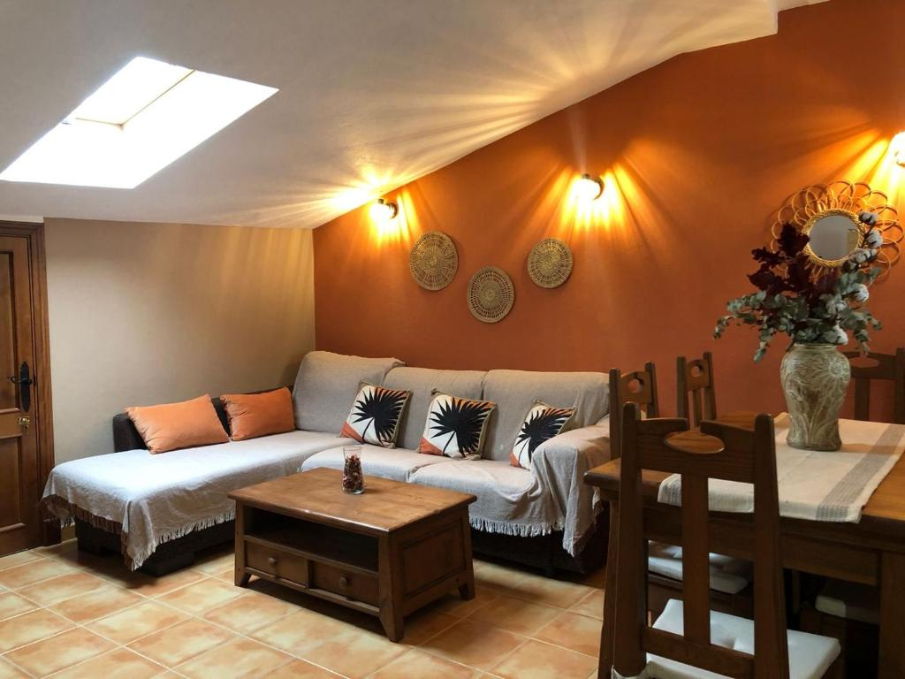

Tres dormitorios
Habitaciones separadas para repartir los momentos de descanso.
El Bosque · Cádiz
Un apartamento con tres dormitorios.
Tu dirección para unos días en El Bosque.
El Ático de Lola es un apartamento en El Bosque, Cádiz. Tres dormitorios, un salón y cocina para organizar la estancia a tu manera.
Una dirección en el pueblo. Y, fuera, la Sierra de Cádiz para ponerle planes al día.
Entra en los detallesLos espacios del apartamento,
contados sin rodeos.

Habitaciones separadas para repartir los momentos de descanso.
Zona de estar con televisión de pantalla plana y chimenea.
Cocina equipada con frigorífico, cafetera y lavavajillas, y zona de comedor.
Baño privado con bañera y bidé.
Una primera mirada a los espacios de El Ático de Lola.
Así es Lola por dentro.
Lo que encontrarás en el apartamento, según su ficha de alojamiento.
Consulta en la plataforma las condiciones, los servicios y los posibles suplementos antes de reservar.
EL DESTINO TAMBIÉN CUENTA
Calles blancas, el río Majaceite y el paisaje de la Sierra de Grazalema. Tres formas de empezar a conocer este pueblo de Cádiz.
Descubrir el destinoConfirma con el alojamiento los detalles de llegada antes de viajar.
Elige tus fechas y consulta la disponibilidad y las condiciones directamente en Booking.
Ver disponibilidad en Booking La reserva se gestiona en la plataforma externa.